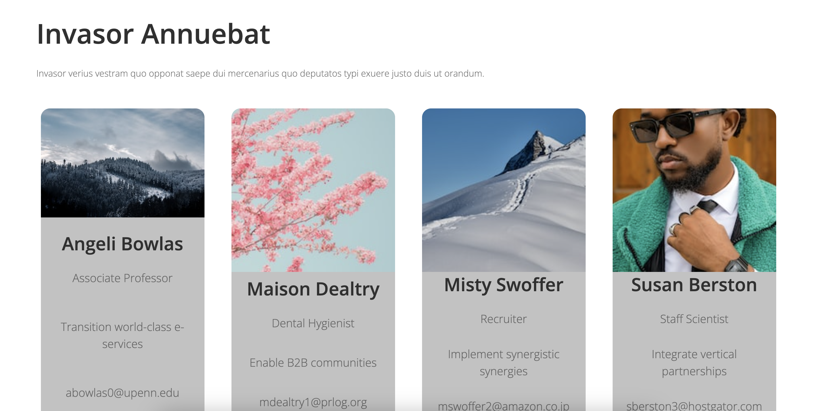

Fonts & Components
In this assignment, I designed a mockup landing page using fonts and gray scales, focusing on font hierarchy and UI card design.
Born in 2000 in Copenhagen, Denmark.
I am a firm believer that web design should be simple, easy to understand, and functional.
My goal is to contribute my young and unbiased perspective to make existing designs even more effective
and user-friendly.
I am passionate about improving and optimizing web experiences, and I aspire to help create digital
spaces
that are both intuitive and visually appealing.
Interested in talking / seeing some of my projects? Continue scrolling!
In this section, I have displayed the projects I have developed over the past fortnight.
In this assignment, I designed a mockup landing page using fonts and gray scales, focusing on font hierarchy and UI card design.
In this assignment, I enhanced a mockup landing page by applying a color palette, creating a dark theme, and adding CSS animations.
In this assignment, I applied CSS Flex and Grid techniques to create a responsive layout for a mockup landing page.
I have acquired skills in managing fonts and colors, as well as utilizing the root element to create dark and light themes. Additionally, I have gained knowledge about various animations and how to implement them using JavaScript.